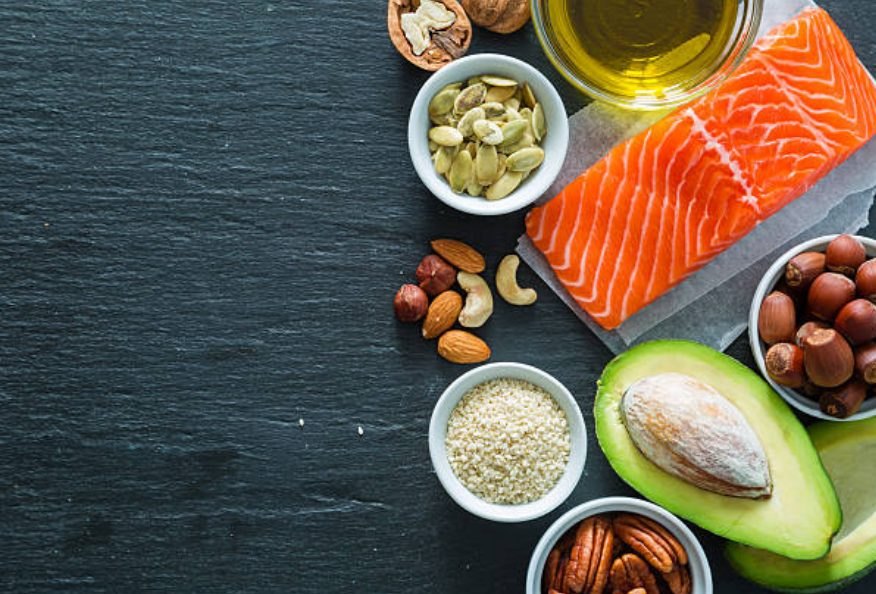
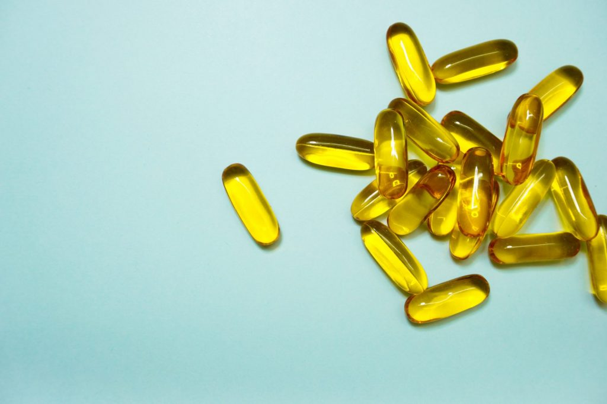
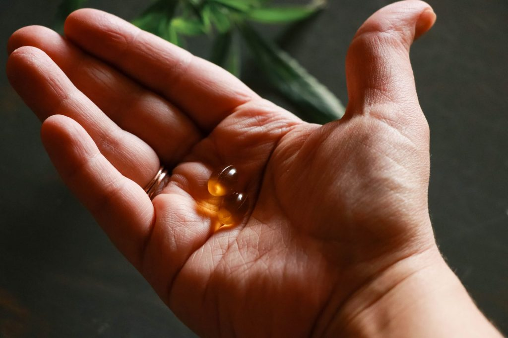

Як правильно пити Омега 3
Зміст
Поліненасичені жирні кислоти Омега 3 є дуже важливим елементом для людського здоров’я, який не синтезується організмом, тому має надходити з їжею. У найбільшій кількості елемент містять морські сорти жирної риби та морепродукти, також джерелом є рослинні жири – авокадо, насіння льону та лляна олія. На жаль, ми дуже рідко вживаємо ці продукти. Тому для підтримки багатьох функцій організму дорослим та дітям рекомендують приймати вітаміни Омега 3 у вигляді добавок. Про те, як правильно це робити, яке дозування Омега 3 потрібне і як довго можна пити, ми детально розповімо далі.

Що таке Омега 3?
Усіх у дитинстві змушували пити корисний, але такий несмачний риб’ячий жир, який містить незамінні для людини поліненасичені жирні кислоти (ПНЖК), адже на той час якісну морську рибу для їх отримання в натуральному вигляді купити було складно.
Омега 3 – це і є та сама кислота, сконцентрована в риб’ячому жирі. Але сьогодні її випускають як окремий препарат у рідкій формі або в капсулах, із точним розрахованим дозуванням для щоденного прийому та оптимальним співвідношенням різних видів цієї кислоти (ейкозапентаєнової, альфа-ліноленової та докозагексаєнової) для кращого засвоєння.
Навіщо пити Омега 3?
Омега 3 – дуже важливий вітамін, про брак якого можна дізнатися, якщо у вас є такі симптоми:
- порушення сну;
- брак уваги та сконцентрованості;
- погіршення зовнішнього вигляду (шкіри, волосся, нігтів);
- біль у серці;
- постійні втома та дратівливість;
- алергічні реакції та дерматити;
- порушення метаболізму;
- зниження імунітету;
- утворення тромбів;
Вживання на регулярній основі добавки Омега 3 допоможе покращити зовнішній вигляд і самопочуття, повернути гарну пам’ять, нормалізувати роботу щитовидної залози, покращити травлення, підтримувати здорову вагу, мати гарне та міцне волосся, пружну та сяючу шкіру.
Як вживати препарат?
Щоб дістати ефект від вживання добавки, потрібно знати, як правильно і скільки пити Омега 3. Адже від правильного дозування залежить не тільки, чи повністю вітамін засвоюється в організмі, але й чи не завдасть шкоди.
Уважно вивчіть інструкцію препарату Омега 3, адже кожен виробник може змінювати дозування, особливо якщо речовина у формі капсул.
Як пити Омега 3 в капсулах?
Найпопулярнішою та найзручнішою формою випуску Омега 3 поліненасичених кислот є саме капсули. Стандартне добове дозування:
- 1 капсула 2 рази на день під час їжі – для жінок;
- 1 капсула 2 або 3 рази на день під час їжі – для чоловіків;
- 1 капсула 1 раз на день під час їжі – для дітей.

Як пити Омега 3 дітям?
Для правильного розвитку дитячого організму Омега 3 потрібна не менше, ніж для дорослих. Добавка не тільки посилює імунітет, завдяки чому діти менше хворіють та підхоплюють віруси, а й покращує пам’ять, концентрацію та розумову діяльність. Рекомендації щодо вживання залежать від віку дитини:
- до 1 року – 0,5 г;
- від 1 до 3 років – 0,7 г;
- після 3 і до 8 років – 0,9 г;
- 9–13 років – 1 г;
- 14–18 років – 1,2–1,6 г.
Не можна перевищувати добову норму, а перед тим як давати добавку дітям, варто проконсультуватися з лікарем.
Рекомендації для вживання дорослим
Зверніться до свого лікаря, і він призначить вам необхідну дозу добавки. У будь-якому разі дотримуйтеся норм: для дорослих це 2 г на день – для жінок і 3 г – для чоловіків. У капсулах це буде в середньому 2 капсули для жінок і 3 – для чоловіків (по одній 2–3 рази на день) під час або після їди.
На пакованні кожного препарату написано рекомендоване дозування, перевищувати його можна лише за рекомендацією лікаря.
Як пити Омега 3 жінкам?
Для чого потрібно пити Омега 3 жінкам і яке має бути дозування? Омега 3 називають жіночим вітаміном, адже він містить потрібні для краси та жіночого здоров’я жирні кислоти, тому:
- полегшує симптоми менопаузи;
- сприяє підтримці здорової ваги;
- нормалізує травлення;
- впливає на емоційний стан та розумову діяльність.
Дозування вітаміну вказано в інструкції, в середньому воно становить 2 капсули на добу під час їжі або 2 г у рідкому вигляді.

Під час вагітності
Вживати Омега 3 рекомендують ще на етапі планування вагітності, тоді організм майбутньої матері буде забезпечений усіма необхідними для розвитку здорового плоду елементами. Регулярний прийом вітаміну до та під час вагітності знижує ймовірність:
- передчасних пологів;
- виникнення розтяжок;
- післяпологової депресії.
Добова норма Омега 3 погоджується з лікарем.
Тривалість вживання препарату
Якщо у вашому раціоні риба та інші насичені жирними кислотами продукти бувають рідко, а у вас є симптоми нестачі цієї речовини, то на запитання “Як довго можна приймати Омега 3?”, відповідь лише одна – постійно.
Якщо ж ви хочете посилити раціон, можна пропивати Омега 3 курсами в 1 або 3 місяці з невеликою паузою, а тривалість курсу і дозування погодити з лікарем.
Чи можна пити Омега 3 постійно?
Оскільки жирні кислоти навіть після вживання як добавки не накопичуються в організмі, їх потрібно пити на регулярній основі. Для забезпечення засвоєння та досягнення результату одного або двох курсів на рік недостатньо.
Як вибрати препарат Omega 3?
Під час вибору препарату звертайте увагу на:
- походження та оброблення риби – вона має бути виловлена в океані, а жир із неї одержаний безпосередньо на місці;
- походження жиру – з тушки риби або з печінки. Другий варіант гірший через ймовірність накопичення у печінці токсинів, які не зникають навіть під час очищення;
- співвідношення видів жирних кислот EPA/DHA, найкраща пропорція – 2:1;
- форму Омега 3 – рідина чи капсули. Перша форма найчастіше представлена тригліцеридами, які добре засвоюються в організмі, але не проходять повного очищення від важких металів, тому краще приймати Омега 3 у капсулах з натуральною оболонкою;
- відсутність непотрібних добавок та штучних ароматизаторів. У японських препаратах від Yotsuba Japan, наприклад, містяться лише натуральні активні інгредієнти – ферментована цибуля та фермент наттокіназа.
Відмінності від риб’ячого жиру
На відміну від дешевшого риб’ячого жиру, Омега 3 краще засвоюється в організмі, адже її формула складена з урахуванням правильної пропорції різних жирних кислот, а також збагачена допоміжними ферментами. Отже, ефективність Омега 3 вища, а результат можна помітити швидше.